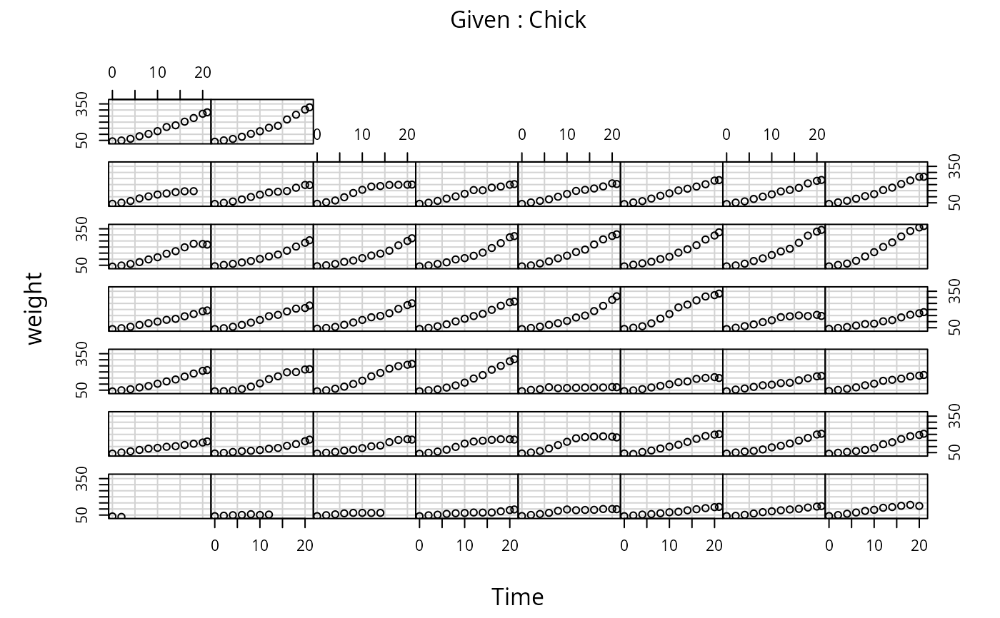

ChickWeight.RdThe ChickWeight data frame has 578 rows and 4 columns from an
experiment on the effect of diet on early growth of chicks.
ChickWeight
An object of class
c("nfnGroupedData", "nfGroupedData", "groupedData", "data.frame")
containing the following columns:
a numeric vector giving the body weight of the chick (gm).
a numeric vector giving the number of days since birth when the measurement was made.
an ordered factor with levels
18 < ... < 48
giving a unique identifier for the chick. The ordering of
the levels groups chicks on the same diet together and
orders them according to their final weight (lightest to
heaviest) within diet.
a factor with levels 1, ..., 4 indicating which experimental diet the chick received.
The body weights of the chicks were measured at birth and every second day thereafter until day 20. They were also measured on day 21. There were four groups on chicks on different protein diets.
This dataset was originally part of package nlme, and that has
methods (including for [, as.data.frame, plot and
print) for its grouped-data classes.
Crowder, M. and Hand, D. (1990), Analysis of Repeated Measures, Chapman and Hall (example 5.3)
Hand, D. and Crowder, M. (1996), Practical Longitudinal Data Analysis, Chapman and Hall (table A.2)
Pinheiro, J. C. and Bates, D. M. (2000) Mixed-effects Models in S and S-PLUS, Springer.
SSlogis for models fitted to this dataset.
# \donttest{ require(graphics) coplot(weight ~ Time | Chick, data = ChickWeight, type = "b", show.given = FALSE)# }